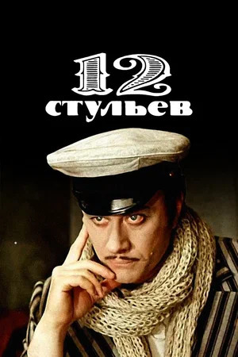

Лучшие фильмы
Три плюс два (1963)

Бриллиантовая рука (1968)
Соломенная шляпка (1974)

12 стульев (1976)
Обыкновенное чудо (1978)
Фантазии Фарятьева (1979)

Сказка странствий (1983)
Человек с бульвара Капуцинов (1987)